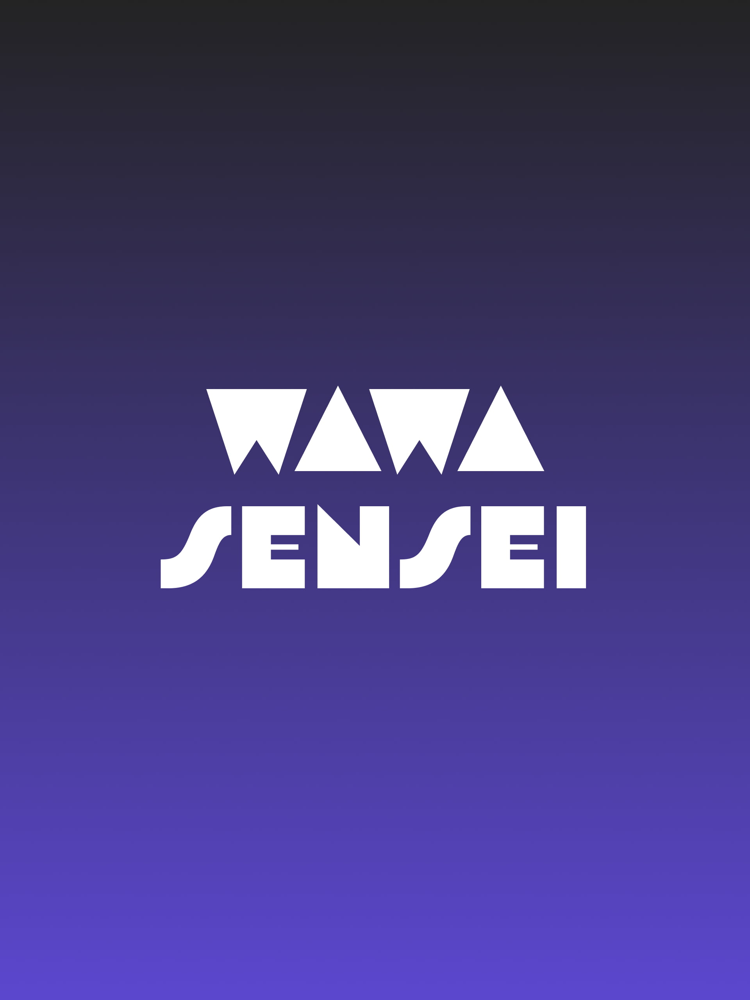

LITERATURE & ARCHITECTURE
Books & Systems Thinking
Avid reader of distributed systems papers, tech history, and venture strategy. Deeply influenced by Martin Kleppmann's Designing Data-Intensive Applications and Peter Thiel's Zero to One, shaping the core engineering defensibility behind FlowDoc.